Introduction
In this vignette we will introduce how to create a drug users
cohorts. A cohort is a set of people that satisfy a certain inclusion
criteria during a certain time frame. The cohort object is defined in :
vignette("cdm_reference", package = "omopgenerics").
The function generateDrugUtilisationCohortSet is used to
generate cohorts of drug users based on the drug_exposure
table and a conceptSet.
These cohorts can be subsetted to the exposures of interest applying the different inclusion criteria:
Require that entries are in a certain date range
requireDrugInDateRange().Subset to the first entry
requireIsFirstDrugEntry().Require a certain time in observation before the entries
requireObservationBeforeDrug().Require a certain time before exposure
requirePriorDrugWashout().
Creating a cdm_reference object
The first thing that we need is a cdm_reference object
to our OMOP CDM instance. You can learn how to create cdm references
using CDMConnector here:
vignette("a04_DBI_connection_examples", package = "CDMConnector").
The DrugUtilisation packages contains some mock data that can be useful to test the package:
library(DrugUtilisation)
library(omopgenerics, warn.conflicts = FALSE)
library(dplyr, warn.conflicts = FALSE)
cdm <- mockDrugUtilisation(numberIndividuals = 100, source = "duckdb")
cdm
#>
#> ── # OMOP CDM reference (duckdb) of DUS MOCK ───────────────────────────────────
#> • omop tables: concept, concept_ancestor, concept_relationship,
#> condition_occurrence, drug_exposure, drug_strength, observation,
#> observation_period, person, visit_occurrence
#> • cohort tables: cohort1, cohort2
#> • achilles tables: -
#> • other tables: -Create a drug users cohort
To create a basic drug users cohort we need two things:
- A conceptSet: will determine which concepts we will use.
- A gapEra: will determine how we will collapse those exposures.
Creating a conceptSet
There are three possible forms of a conceptSet:
- A named list of concept ids
- A
codelistobject, seevignette("codelists", package = "omopgenerics")
conceptSet <- list(acetaminophen = c(1, 2, 3)) |>
newCodelist()
#> Warning: ! `codelist` casted to integers.
conceptSet
#>
#> ── 1 codelist ──────────────────────────────────────────────────────────────────
#>
#> - acetaminophen (3 codes)
conceptSet$acetaminophen
#> [1] 1 2 3- A
conceptSetExpressionobject, seevignette("codelists", package = "omopgenerics")
conceptSet <- list(acetaminophen = tibble(
concept_id = 1125315,
excluded = FALSE,
descendants = TRUE,
mapped = FALSE
)) |>
newConceptSetExpression()
conceptSet
#>
#> ── 1 concept set expression ────────────────────────────────────────────────────
#>
#> - acetaminophen (1 concept criteria)
conceptSet$acetaminophen
#> # A tibble: 1 × 4
#> concept_id excluded descendants mapped
#> <int> <lgl> <lgl> <lgl>
#> 1 1125315 FALSE TRUE FALSEThe package CodelistGenerator can be very useful to create conceptSet.
For example we can create a conceptSet based in an ingredient with
getDrugIngredientCodes():
codes <- getDrugIngredientCodes(cdm = cdm, name = "acetaminophen", nameStyle = "{concept_name}")
codes[["acetaminophen"]]
#> [1] 1125315 1125360 2905077 43135274We could also use the function codesFromConceptSet() to
read a concept set from a json file:
codes <- codesFromConceptSet(path = system.file("acetaminophen.json", package = "DrugUtilisation"), cdm = cdm)
codes
#>
#> ── 1 codelist ──────────────────────────────────────────────────────────────────
#>
#> - acetaminophen (4 codes)The gapEra parameter
The gapEra parameter is used to join exposures into
episodes, let’s say for example we have an individual with 4 drug
exposures that we are interested in. The first two overlap each other,
then there is a gap of 29 days and two consecutive exposures:
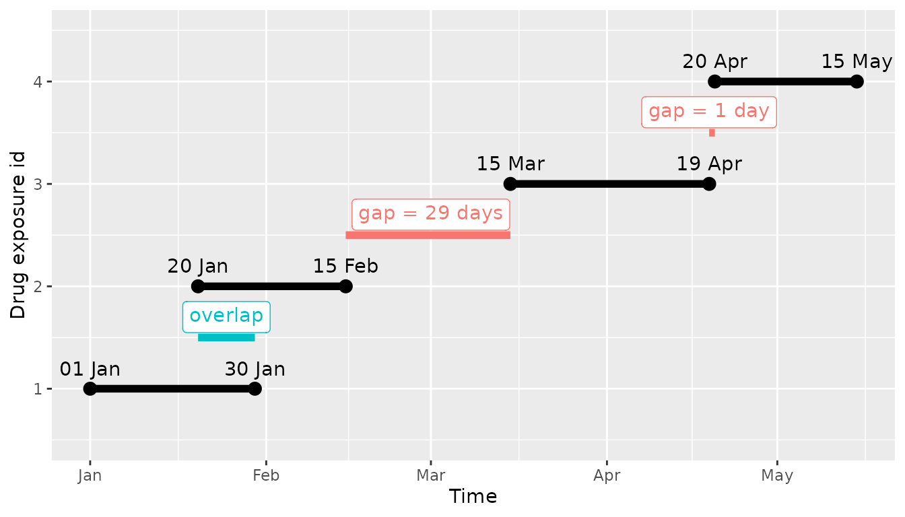
If we would create the episode with gapEra = 0, we would have 3 resultant episodes, the first two that overlap would be joined in a single episode, but then the other two would be independent:
#> # A tibble: 3 × 4
#> cohort_definition_id subject_id cohort_start_date cohort_end_date
#> <int> <int> <date> <date>
#> 1 1 1 2020-01-01 2020-02-15
#> 2 1 1 2020-03-15 2020-04-19
#> 3 1 1 2020-04-20 2020-05-15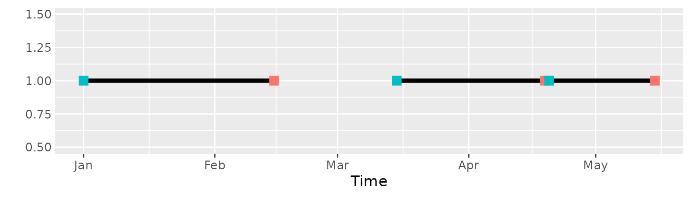
If, instead we would use a gapEra = 1, we would have 2 resultant episodes, the first two that overlap would be joined in a single episode (as before), now the two consecutive exposures would be joined in a single episode:
#> # A tibble: 2 × 4
#> cohort_definition_id subject_id cohort_start_date cohort_end_date
#> <int> <int> <date> <date>
#> 1 1 1 2020-01-01 2020-02-15
#> 2 1 1 2020-03-15 2020-05-15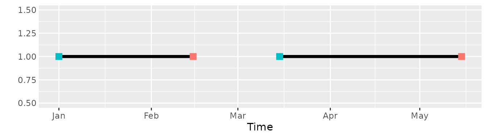
The result would be the same for any value between 1 and 28 (gapEra [1, 28]).
Whereas, if we would use a gapEra = 29 all the records would be collapsed into a single episode:
#> # A tibble: 1 × 4
#> cohort_definition_id subject_id cohort_start_date cohort_end_date
#> <int> <int> <date> <date>
#> 1 1 1 2020-01-01 2020-05-15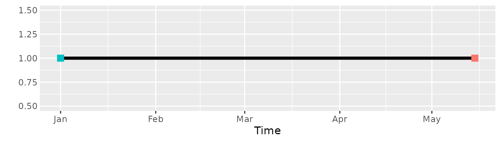
Create your cohort
We will then create now a cohort with all the drug users of acetaminophen with a gapEra of 30 days.
codes <- getDrugIngredientCodes(cdm = cdm, name = "acetaminophen", nameStyle = "{concept_name}")
cdm <- generateDrugUtilisationCohortSet(
cdm = cdm,
name = "acetaminophen_cohort",
conceptSet = codes,
gapEra = 30L
)
#> ℹ Subsetting drug_exposure table
#> ℹ Checking whether any record needs to be dropped.
#> ℹ Collapsing overlaping records.
#> ℹ Collapsing records with gapEra = 30 days.
cdm
#>
#> ── # OMOP CDM reference (duckdb) of DUS MOCK ───────────────────────────────────
#> • omop tables: concept, concept_ancestor, concept_relationship,
#> condition_occurrence, drug_exposure, drug_strength, observation,
#> observation_period, person, visit_occurrence
#> • cohort tables: acetaminophen_cohort, cohort1, cohort2
#> • achilles tables: -
#> • other tables: -NOTE that the name argument is used to create the new
table in the cdm object. For database backends this is the name of the
table that will be created.
We can compare what we see with what we would expect; if we look at the individual with more records we can see how all of them are joined into a single exposure as the records overlap each other:
cdm$drug_exposure |>
filter(drug_concept_id %in% !!codes$acetaminophen & person_id == 69)
#> # Source: SQL [?? x 23]
#> # Database: DuckDB 1.4.2 [unknown@Linux 6.11.0-1018-azure:R 4.5.2/:memory:]
#> # ℹ 23 variables: drug_exposure_id <int>, person_id <int>,
#> # drug_concept_id <int>, drug_exposure_start_date <date>,
#> # drug_exposure_end_date <date>, drug_type_concept_id <int>, quantity <dbl>,
#> # drug_exposure_start_datetime <date>, drug_exposure_end_datetime <date>,
#> # verbatim_end_date <date>, stop_reason <chr>, refills <int>,
#> # days_supply <int>, sig <chr>, route_concept_id <int>, lot_number <chr>,
#> # provider_id <int>, visit_occurrence_id <int>, visit_detail_id <int>, …
cdm$acetaminophen_cohort |>
filter(subject_id == 69)
#> # Source: SQL [?? x 4]
#> # Database: DuckDB 1.4.2 [unknown@Linux 6.11.0-1018-azure:R 4.5.2/:memory:]
#> # ℹ 4 variables: cohort_definition_id <int>, subject_id <int>,
#> # cohort_start_date <date>, cohort_end_date <date>In this case gapEra did not have a big impact as we can see in the attrition:
attrition(cdm$acetaminophen_cohort)
#> # A tibble: 2 × 7
#> cohort_definition_id number_records number_subjects reason_id reason
#> <int> <int> <int> <int> <chr>
#> 1 1 64 53 1 Initial qualify…
#> 2 1 63 53 2 Collapse record…
#> # ℹ 2 more variables: excluded_records <int>, excluded_subjects <int>We can see this particular case of this individual:
cdm$drug_exposure |>
filter(drug_concept_id %in% !!codes$acetaminophen & person_id == 50)
#> # Source: SQL [?? x 23]
#> # Database: DuckDB 1.4.2 [unknown@Linux 6.11.0-1018-azure:R 4.5.2/:memory:]
#> drug_exposure_id person_id drug_concept_id drug_exposure_start_date
#> <int> <int> <int> <date>
#> 1 153 50 2905077 2009-02-05
#> 2 154 50 2905077 2010-10-24
#> 3 155 50 43135274 2014-12-02
#> # ℹ 19 more variables: drug_exposure_end_date <date>,
#> # drug_type_concept_id <int>, quantity <dbl>,
#> # drug_exposure_start_datetime <date>, drug_exposure_end_datetime <date>,
#> # verbatim_end_date <date>, stop_reason <chr>, refills <int>,
#> # days_supply <int>, sig <chr>, route_concept_id <int>, lot_number <chr>,
#> # provider_id <int>, visit_occurrence_id <int>, visit_detail_id <int>,
#> # drug_source_value <chr>, drug_source_concept_id <int>, …In this case we have 3 exposures separated by 3 days, so if we use the 30 days gap both exposures are joined into a single episode, whereas if we would use a gapEra smaller than 3 we would consider them as different episodes.
cdm$acetaminophen_cohort |>
filter(subject_id == 50)
#> # Source: SQL [?? x 4]
#> # Database: DuckDB 1.4.2 [unknown@Linux 6.11.0-1018-azure:R 4.5.2/:memory:]
#> cohort_definition_id subject_id cohort_start_date cohort_end_date
#> <int> <int> <date> <date>
#> 1 1 50 2009-02-05 2009-07-16
#> 2 1 50 2010-10-24 2015-07-12We can access the other cohort attributes using the adequate functions. In settings we can see that the gapEra used is recorded or with cohortCodelist we can see which was the codelist used to create the cohort.
settings(cdm$acetaminophen_cohort)
#> # A tibble: 1 × 3
#> cohort_definition_id cohort_name gap_era
#> <int> <chr> <chr>
#> 1 1 acetaminophen 30
cohortCount(cdm$acetaminophen_cohort)
#> # A tibble: 1 × 3
#> cohort_definition_id number_records number_subjects
#> <int> <int> <int>
#> 1 1 63 53
cohortCodelist(cdm$acetaminophen_cohort, cohortId = 1)
#>
#> ── 1 codelist ──────────────────────────────────────────────────────────────────
#>
#> - acetaminophen (4 codes)Analogous functions
The function generateDrugUtilisationCohortSet() has two
analogous functions:
-
generateAtcCohortSet()to generate cohorts using ATC labels. -
generateIngredientCohortSet()to generate cohorts using ingredients names.
Both functions allow to create cohorts and have all the same
arguments than generateDrugUtilisationCohortSet() the main
difference is that instead of the conceptSet argument we
have the atcName argument and the ingredient
argument. Also both functions have the ... argument that is
used by CodelistGenerator::getATCCodes() and
CodelistGenerator::getDrugIngredientCodes()
respectively.
Let’s see two simple examples, we can generate the ‘alimentary tract and metabolism’ (ATC code) cohort with:
cdm <- generateAtcCohortSet(
cdm = cdm,
atcName = "alimentary tract and metabolism",
name = "atc_cohort"
)
#> ℹ Subsetting drug_exposure table
#> ℹ Checking whether any record needs to be dropped.
#> Warning: cohort_name must be snake case and have less than 100 characters, the following
#> cohorts will be renamed:
#> • alimentary tract and metabolism -> alimentary_tract_and_metabolism
#> ℹ Collapsing records with gapEra = 1 days.
settings(cdm$atc_cohort)
#> # A tibble: 1 × 8
#> cohort_definition_id cohort_name gap_era level dose_form dose_unit
#> <int> <chr> <chr> <chr> <chr> <chr>
#> 1 1 alimentary_tract_and_m… 1 ATC … "" ""
#> # ℹ 2 more variables: route_category <chr>, atc_name <chr>And the ‘simvastatin’ and ‘metformin’ cohorts, restricting to products with only one ingredient:
cdm <- generateIngredientCohortSet(
cdm = cdm,
ingredient = c('simvastatin', 'metformin'),
name = "ingredient_cohort",
ingredientRange = c(1, 1)
)
#> ℹ Subsetting drug_exposure table
#> ℹ Checking whether any record needs to be dropped.
#> ℹ Collapsing overlaping records.
#> ℹ Collapsing records with gapEra = 1 days.
settings(cdm$ingredient_cohort)
#> # A tibble: 2 × 8
#> cohort_definition_id cohort_name gap_era dose_form dose_unit route_category
#> <int> <chr> <chr> <chr> <chr> <chr>
#> 1 1 metformin 1 "" "" ""
#> 2 2 simvastatin 1 "" "" ""
#> # ℹ 2 more variables: ingredient_range <chr>, ingredient_name <chr>Carry over days / Use days prescribed
As we have seen in the previous examples overlapping drug exposure
records are collapsed in a single episode and records separated by
gapEra days or less are also collapsed into the same era.
Now we will see another case where we want to carry over the overlapping
days. Let’s say we have the following records (as we had in the previous
example):
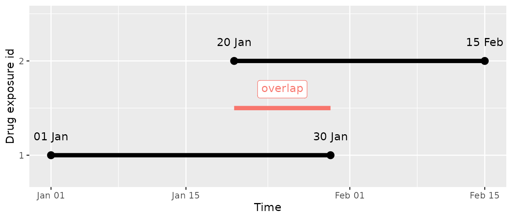
What we want is to carry over the overlap between both records and add it at the end of the exposure:
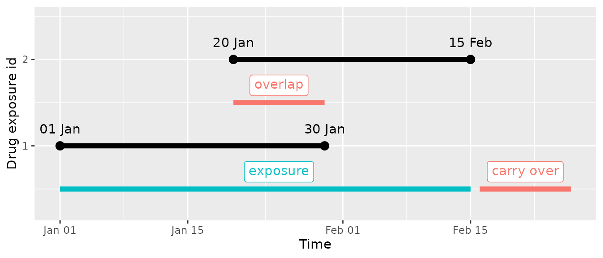
So in this case we want to carry over the 11 days (between 20th Jan and 30th Jan) that the individual is exposed by two exposures at the end and add them at the end of the continuous exposure. Let’s start by creating a very simple mock data set with the same exposures than in the example:
cdm2 <- mockDrugUtilisation(drug_exposure = tibble(
drug_exposure_id = 1:2L,
person_id = 1L,
drug_concept_id = 1125360L,
drug_exposure_start_date = as.Date(c("2020-01-01", "2020-01-20")),
drug_exposure_end_date = as.Date(c("2020-01-30", "2020-02-15"))
), source = "duckdb")
cdm2$drug_exposure
#> # Source: table<drug_exposure> [?? x 23]
#> # Database: DuckDB 1.4.2 [unknown@Linux 6.11.0-1018-azure:R 4.5.2/:memory:]
#> drug_exposure_id person_id drug_concept_id drug_exposure_start_date
#> <int> <int> <int> <date>
#> 1 1 1 1125360 2020-01-01
#> 2 2 1 1125360 2020-01-20
#> # ℹ 19 more variables: drug_exposure_end_date <date>,
#> # drug_exposure_start_datetime <date>, drug_exposure_end_datetime <date>,
#> # verbatim_end_date <date>, drug_type_concept_id <int>, stop_reason <chr>,
#> # refills <int>, quantity <dbl>, days_supply <int>, sig <chr>,
#> # route_concept_id <int>, lot_number <chr>, provider_id <int>,
#> # visit_occurrence_id <int>, visit_detail_id <int>, drug_source_value <chr>,
#> # drug_source_concept_id <int>, route_source_value <chr>, …Let’s now create the DrugUtilisation cohort with the
numberExposure and daysPrescribed arguments as
TRUE:
cdm2 <- generateDrugUtilisationCohortSet(
cdm = cdm2,
name = "dus_cohort",
conceptSet = codes,
daysPrescribed = TRUE
)
#> ℹ Subsetting drug_exposure table
#> ℹ Checking whether any record needs to be dropped.
#> ℹ Collapsing overlaping records.
#> ℹ Collapsing records with gapEra = 1 days.The generated cohort will span from 1st of January to 15th of
February and have 1 extra column (days_prescribed):
cdm2$dus_cohort |>
glimpse()
#> Rows: ??
#> Columns: 5
#> Database: DuckDB 1.4.2 [unknown@Linux 6.11.0-1018-azure:R 4.5.2/:memory:]
#> $ cohort_definition_id <int> 1
#> $ subject_id <int> 1
#> $ cohort_start_date <date> 2020-01-01
#> $ cohort_end_date <date> 2020-02-15
#> $ days_prescribed <int> 57Now what we can do is to instead of using the provided end date to
set the end date as:
cohort_start_date + days_prescribed - 1. Note that we
subtract 1 day because days_prescribed is defined as a
‘duration’ so end - start + 1 (so start and end date are
both counted in the number of days count).
One solution would be to do directly
cohort_end_date = cohort_start_date + days_prescribed - 1,
but this can lead to two main problems: (1) no all sources handles
correctly the addition and subtraction of numbers to a date, (2) we
could create overlapping cohort records. To account for both issues we
will use CohortConstructor,
in particular the padCohortDate() function, see
example:
library(CohortConstructor)
cdm2$dus_cohort <- cdm2$dus_cohort |>
mutate(days_to_add = days_prescribed - 1L) |>
padCohortDate(
days = "days_to_add",
cohortDate = "cohort_end_date",
indexDate = "cohort_start_date",
collapse = TRUE
)Now we can see that the created cohort is as we wished between 1st of January to 26th of February:
cdm2$dus_cohort
#> # Source: table<dus_cohort> [?? x 4]
#> # Database: DuckDB 1.4.2 [unknown@Linux 6.11.0-1018-azure:R 4.5.2/:memory:]
#> cohort_definition_id subject_id cohort_start_date cohort_end_date
#> <int> <int> <date> <date>
#> 1 1 1 2020-01-01 2020-02-15Please note that this does not change the data in drug_exposure, so if you then use this cohort to see in which days the individual was ‘exposed’ only the days between 1st of January and 15th of February will count as are the days that the individual has an ongoing prescription recorded:
cdm2$dus_cohort |>
addDaysExposed(conceptSet = codes, gapEra = 1L) |>
glimpse()
#> Rows: ??
#> Columns: 5
#> Database: DuckDB 1.4.2 [unknown@Linux 6.11.0-1018-azure:R 4.5.2/:memory:]
#> $ cohort_definition_id <int> 1
#> $ subject_id <int> 1
#> $ cohort_start_date <date> 2020-01-01
#> $ cohort_end_date <date> 2020-02-15
#> $ days_exposed_acetaminophen <int> 46Apply inclusion criteria to drug cohorts
Once we have created our base cohort using a conceptSet and a gapEra we can apply different restrictions:
- require a prior unexposed time:
requirePriorDrugWashout() - require that it is the first entry:
requireIsFirstDrugEntry() - require a prior observation in the cdm:
requireObservationBeforeDrug() - require that date are within a certain interval:
requireDrugInDateRange()
requirePriorDrugWashout()
To require that the cohort entries (drug episodes) are incident we
would usually define a time (days) where the individual is
not exposed to the drug. This can be achieved using
requirePriorDrugWashout() function. In this example we
would restrict to individuals with 365 days of no exposure:
cdm$acetaminophen_cohort <- cdm$acetaminophen_cohort |>
requirePriorDrugWashout(days = 365)The result will be a cohort with the individuals that fulfill the criteria:
cdm$acetaminophen_cohort
#> # Source: table<acetaminophen_cohort> [?? x 4]
#> # Database: DuckDB 1.4.2 [unknown@Linux 6.11.0-1018-azure:R 4.5.2/:memory:]
#> cohort_definition_id subject_id cohort_start_date cohort_end_date
#> <int> <int> <date> <date>
#> 1 1 33 2017-01-04 2019-09-13
#> 2 1 33 2021-10-02 2021-11-13
#> 3 1 84 2022-12-13 2022-12-14
#> 4 1 22 2004-12-23 2005-06-17
#> 5 1 14 2021-02-06 2021-03-15
#> 6 1 27 1970-05-28 1972-10-28
#> 7 1 27 1974-09-09 1976-01-10
#> 8 1 50 2009-02-05 2009-07-16
#> 9 1 50 2010-10-24 2015-07-12
#> 10 1 73 2015-03-11 2015-06-17
#> # ℹ more rowsThis would also get recorded in the attrition, counts and settings.
In the settings a new column with the specified parameter used:
settings(cdm$acetaminophen_cohort)
#> # A tibble: 1 × 4
#> cohort_definition_id cohort_name gap_era prior_use_washout
#> <int> <chr> <chr> <chr>
#> 1 1 acetaminophen 30 365The counts will be updated:
cohortCount(cdm$acetaminophen_cohort)
#> # A tibble: 1 × 3
#> cohort_definition_id number_records number_subjects
#> <int> <int> <int>
#> 1 1 61 53And the attrition will have a new line:
attrition(cdm$acetaminophen_cohort)
#> # A tibble: 3 × 7
#> cohort_definition_id number_records number_subjects reason_id reason
#> <int> <int> <int> <int> <chr>
#> 1 1 64 53 1 Initial qualify…
#> 2 1 63 53 2 Collapse record…
#> 3 1 61 53 3 require prior u…
#> # ℹ 2 more variables: excluded_records <int>, excluded_subjects <int>The name argument can be used to put the result into a
different table in our cdm (by default the function updates the current
cohort table). Whereas the cohortId argument is used to
apply this criteria to only a restricted set of cohorts (by default the
same criteria is applied to all the cohort records). To show this in an
example we will create two cohorts (metformin and simvastatin) inside a
table named my_cohort and then apply the inclusion criteria
to only one of them (simvastatin) and save the result to a table named:
my_new_cohort
codes <- getDrugIngredientCodes(cdm = cdm, name = c("metformin", "simvastatin"))
cdm <- generateDrugUtilisationCohortSet(cdm = cdm, name = "my_cohort", conceptSet = codes, gapEra = 30)
#> ℹ Subsetting drug_exposure table
#> ℹ Checking whether any record needs to be dropped.
#> ℹ Collapsing overlaping records.
#> ℹ Collapsing records with gapEra = 30 days.
cdm
#>
#> ── # OMOP CDM reference (duckdb) of DUS MOCK ───────────────────────────────────
#> • omop tables: concept, concept_ancestor, concept_relationship,
#> condition_occurrence, drug_exposure, drug_strength, observation,
#> observation_period, person, visit_occurrence
#> • cohort tables: acetaminophen_cohort, atc_cohort, cohort1, cohort2,
#> ingredient_cohort, my_cohort
#> • achilles tables: -
#> • other tables: -
settings(cdm$my_cohort)
#> # A tibble: 2 × 3
#> cohort_definition_id cohort_name gap_era
#> <int> <chr> <chr>
#> 1 1 36567_simvastatin 30
#> 2 2 6809_metformin 30
cdm$my_new_cohort <- cdm$my_cohort |>
requirePriorDrugWashout(days = 365, cohortId = 2, name = "my_new_cohort")
cdm
#>
#> ── # OMOP CDM reference (duckdb) of DUS MOCK ───────────────────────────────────
#> • omop tables: concept, concept_ancestor, concept_relationship,
#> condition_occurrence, drug_exposure, drug_strength, observation,
#> observation_period, person, visit_occurrence
#> • cohort tables: acetaminophen_cohort, atc_cohort, cohort1, cohort2,
#> ingredient_cohort, my_cohort, my_new_cohort
#> • achilles tables: -
#> • other tables: -
attrition(cdm$my_new_cohort)
#> # A tibble: 5 × 7
#> cohort_definition_id number_records number_subjects reason_id reason
#> <int> <int> <int> <int> <chr>
#> 1 1 64 56 1 Initial qualify…
#> 2 1 63 56 2 Collapse record…
#> 3 2 57 51 1 Initial qualify…
#> 4 2 56 51 2 Collapse record…
#> 5 2 55 51 3 require prior u…
#> # ℹ 2 more variables: excluded_records <int>, excluded_subjects <int>
requireIsFirstDrugEntry()
To require that the cohort entry (drug episodes) is the first one of
the available ones we can use the requireIsFirstDrugEntry()
function. See example:
cdm$acetaminophen_cohort <- cdm$acetaminophen_cohort |>
requireIsFirstDrugEntry()The result will be a cohort with the individuals that fulfill the criteria:
cdm$acetaminophen_cohort
#> # Source: table<acetaminophen_cohort> [?? x 4]
#> # Database: DuckDB 1.4.2 [unknown@Linux 6.11.0-1018-azure:R 4.5.2/:memory:]
#> cohort_definition_id subject_id cohort_start_date cohort_end_date
#> <int> <int> <date> <date>
#> 1 1 6 2019-12-21 2020-04-08
#> 2 1 55 1999-11-01 2004-05-03
#> 3 1 65 1995-04-25 2004-07-01
#> 4 1 89 2020-06-17 2022-03-03
#> 5 1 26 1994-12-01 1995-04-02
#> 6 1 34 2009-06-19 2009-06-28
#> 7 1 59 2007-06-20 2008-06-28
#> 8 1 13 1986-11-20 1987-02-12
#> 9 1 29 2016-04-02 2019-11-13
#> 10 1 38 2010-12-18 2016-08-26
#> # ℹ more rowsThis would also get recorded in the attrition, counts and settings on top of the already exiting ones.
In the settings a new column with the specified parameter used:
settings(cdm$acetaminophen_cohort)
#> # A tibble: 1 × 5
#> cohort_definition_id cohort_name gap_era prior_use_washout limit
#> <int> <chr> <chr> <chr> <chr>
#> 1 1 acetaminophen 30 365 first_entryThe counts will be updated:
cohortCount(cdm$acetaminophen_cohort)
#> # A tibble: 1 × 3
#> cohort_definition_id number_records number_subjects
#> <int> <int> <int>
#> 1 1 53 53And the attrition will have a new line:
attrition(cdm$acetaminophen_cohort)
#> # A tibble: 4 × 7
#> cohort_definition_id number_records number_subjects reason_id reason
#> <int> <int> <int> <int> <chr>
#> 1 1 64 53 1 Initial qualify…
#> 2 1 63 53 2 Collapse record…
#> 3 1 61 53 3 require prior u…
#> 4 1 53 53 4 require is the …
#> # ℹ 2 more variables: excluded_records <int>, excluded_subjects <int>
requireObservationBeforeDrug()
To require that a cohort entry (drug episodes) has a certain time of
prior observation we can use the
requireObservationBeforeDrug() function. See example:
cdm$acetaminophen_cohort <- cdm$acetaminophen_cohort |>
requireObservationBeforeDrug(days = 365)The result will be a cohort with the individuals that fulfill the criteria:
cdm$acetaminophen_cohort
#> # Source: table<acetaminophen_cohort> [?? x 4]
#> # Database: DuckDB 1.4.2 [unknown@Linux 6.11.0-1018-azure:R 4.5.2/:memory:]
#> cohort_definition_id subject_id cohort_start_date cohort_end_date
#> <int> <int> <date> <date>
#> 1 1 2 1998-05-20 2012-04-20
#> 2 1 3 2014-03-17 2015-03-01
#> 3 1 9 2007-07-03 2009-03-04
#> 4 1 11 2014-12-17 2015-07-05
#> 5 1 12 2005-11-10 2012-03-21
#> 6 1 13 1986-11-20 1987-02-12
#> 7 1 15 1972-01-05 1983-04-19
#> 8 1 18 2011-04-22 2013-11-13
#> 9 1 24 2014-03-28 2014-08-09
#> 10 1 27 1970-05-28 1972-10-28
#> # ℹ more rowsThis would also get recorded in the attrition, counts and settings on top of the already exiting ones.
In the settings a new column with the specified parameter used:
settings(cdm$acetaminophen_cohort)
#> # A tibble: 1 × 6
#> cohort_definition_id cohort_name gap_era prior_use_washout limit
#> <int> <chr> <chr> <chr> <chr>
#> 1 1 acetaminophen 30 365 first_entry
#> # ℹ 1 more variable: prior_drug_observation <chr>The counts will be updated:
cohortCount(cdm$acetaminophen_cohort)
#> # A tibble: 1 × 3
#> cohort_definition_id number_records number_subjects
#> <int> <int> <int>
#> 1 1 32 32And the attrition will have a new line:
attrition(cdm$acetaminophen_cohort)
#> # A tibble: 5 × 7
#> cohort_definition_id number_records number_subjects reason_id reason
#> <int> <int> <int> <int> <chr>
#> 1 1 64 53 1 Initial qualify…
#> 2 1 63 53 2 Collapse record…
#> 3 1 61 53 3 require prior u…
#> 4 1 53 53 4 require is the …
#> 5 1 32 32 5 require prior o…
#> # ℹ 2 more variables: excluded_records <int>, excluded_subjects <int>
requireDrugInDateRange()
To require that a cohort entry (drug episodes) has a certain date
within an specific range we can use the
requireDrugInDateRange() function. In general you would
like to apply this restriction to the incident date (cohort_start_date),
but the function is flexible and you can use it to restrict to any other
date. See example:
cdm$acetaminophen_cohort <- cdm$acetaminophen_cohort |>
requireDrugInDateRange(
indexDate = "cohort_start_date",
dateRange = as.Date(c("2000-01-01", "2020-12-31"))
)The result will be a cohort with the individuals that fulfill the criteria:
cdm$acetaminophen_cohort
#> # Source: table<acetaminophen_cohort> [?? x 4]
#> # Database: DuckDB 1.4.2 [unknown@Linux 6.11.0-1018-azure:R 4.5.2/:memory:]
#> cohort_definition_id subject_id cohort_start_date cohort_end_date
#> <int> <int> <date> <date>
#> 1 1 3 2014-03-17 2015-03-01
#> 2 1 9 2007-07-03 2009-03-04
#> 3 1 11 2014-12-17 2015-07-05
#> 4 1 12 2005-11-10 2012-03-21
#> 5 1 18 2011-04-22 2013-11-13
#> 6 1 24 2014-03-28 2014-08-09
#> 7 1 29 2016-04-02 2019-11-13
#> 8 1 33 2017-01-04 2019-09-13
#> 9 1 34 2009-06-19 2009-06-28
#> 10 1 38 2010-12-18 2016-08-26
#> # ℹ more rowsThis would also get recorded in the attrition, counts and settings on top of the already exiting ones.
In the settings a new column with the specified parameter used:
settings(cdm$acetaminophen_cohort)
#> # A tibble: 1 × 6
#> cohort_definition_id cohort_name gap_era prior_use_washout limit
#> <int> <chr> <chr> <chr> <chr>
#> 1 1 acetaminophen 30 365 first_entry
#> # ℹ 1 more variable: prior_drug_observation <chr>The counts will be updated:
cohortCount(cdm$acetaminophen_cohort)
#> # A tibble: 1 × 3
#> cohort_definition_id number_records number_subjects
#> <int> <int> <int>
#> 1 1 21 21And the attrition will have a new line:
attrition(cdm$acetaminophen_cohort)
#> # A tibble: 6 × 7
#> cohort_definition_id number_records number_subjects reason_id reason
#> <int> <int> <int> <int> <chr>
#> 1 1 64 53 1 Initial qualify…
#> 2 1 63 53 2 Collapse record…
#> 3 1 61 53 3 require prior u…
#> 4 1 53 53 4 require is the …
#> 5 1 32 32 5 require prior o…
#> 6 1 21 21 6 require cohort_…
#> # ℹ 2 more variables: excluded_records <int>, excluded_subjects <int>If you just want to restrict on the lower or upper bound you can just leave the other element as NA and then no condition will be applied, see for example:
cdm$my_new_cohort <- cdm$my_new_cohort |>
requireDrugInDateRange(dateRange = as.Date(c(NA, "2010-12-31")))
attrition(cdm$my_new_cohort)
#> # A tibble: 7 × 7
#> cohort_definition_id number_records number_subjects reason_id reason
#> <int> <int> <int> <int> <chr>
#> 1 1 64 56 1 Initial qualify…
#> 2 1 63 56 2 Collapse record…
#> 3 1 32 31 3 require cohort_…
#> 4 2 57 51 1 Initial qualify…
#> 5 2 56 51 2 Collapse record…
#> 6 2 55 51 3 require prior u…
#> 7 2 27 27 4 require cohort_…
#> # ℹ 2 more variables: excluded_records <int>, excluded_subjects <int>The order matters
It is very important to know that the different restrictions are not commutable operations and that different order can lead to different results. Let’s see the following example where we have an individual with 4 cohort entries:

In this case we will see the result of combining in different ways 4 inclusion criteria:
-
first:
requireIsFirstDrugEntry() -
washout:
requirePriorDrugWashout(days = 365) -
minObs:
requireObservationBeforeDrug(days = 365) -
2011-2012
requireDrugInDateRange(dateRange = as.Date(c("2011-01-01", "2012-12-31)))
first and washout
If we would apply the initially the first requirement and then the washout one we would end with only the first record:
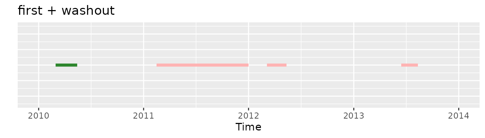
Whereas if we would apply initially the washout criteria and then the first one the resulting exposure would be the fourth one:
first and minObs
If we would apply the initially the first requirement and then the minObs one we would end with no record in the cohort:
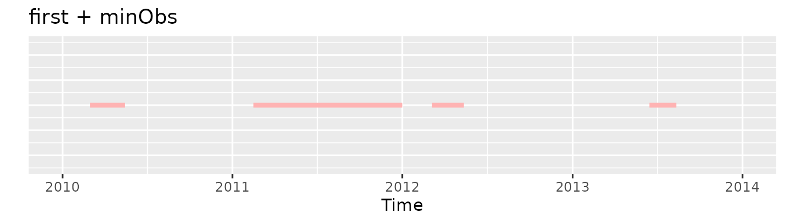
Whereas if we would apply initially the minObs criteria and then the first one there would be an exposure selected, the second one:
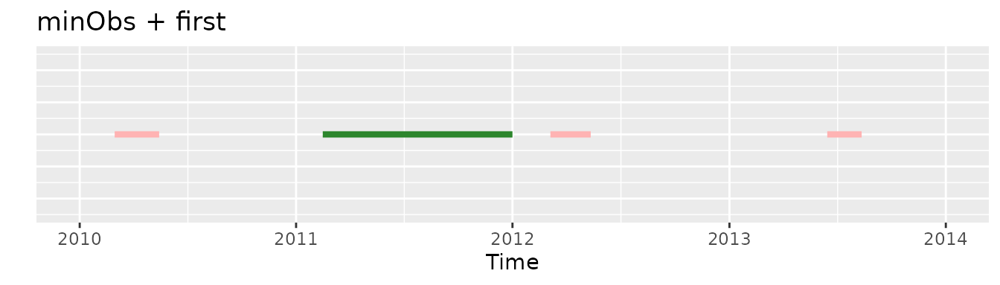
first and 2011-2012
If we would apply the initially the first requirement and then the 2011-2012 one we would end with no record in the cohort:
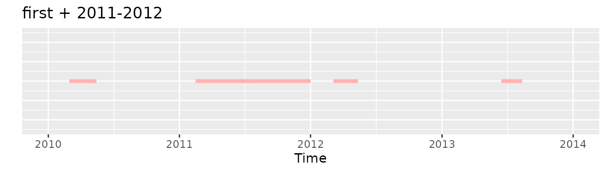
Whereas if we would apply initially the 2011-2012 criteria and then the first one there would be an exposure selected, the second one:
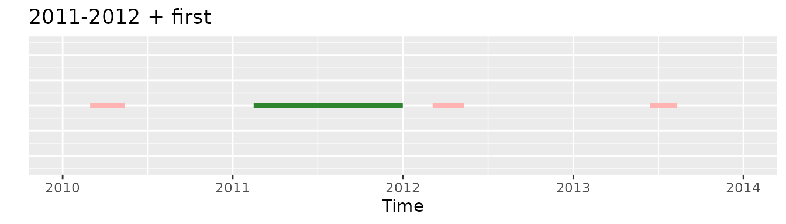
washout and minObs
If we would apply the initially the washout requirement and then the minObs one we would end with only the last record selected:
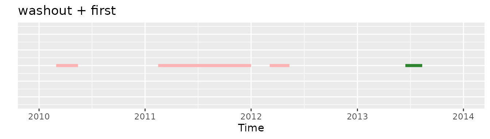
Whereas if we would apply initially the minObs criteria and then the washout one the second and the fourth exposures are the ones that would be selected:
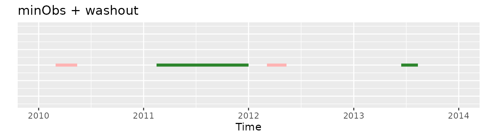
washout and 2011-2012
If we would apply initially the washout requirement and then the 2011-2012 one no record would be selected:
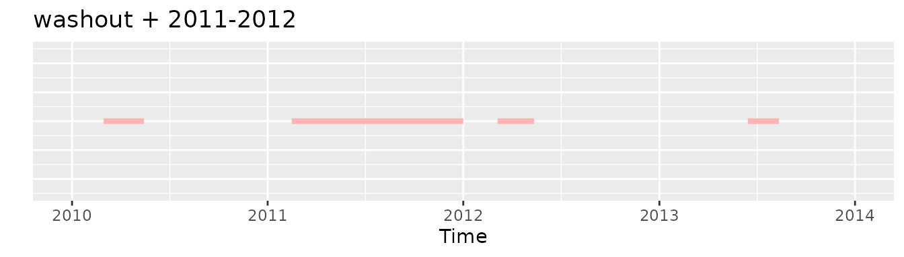
Whereas if we would apply initially the 2011-2012 criteria and then the washout one the second record would be included:
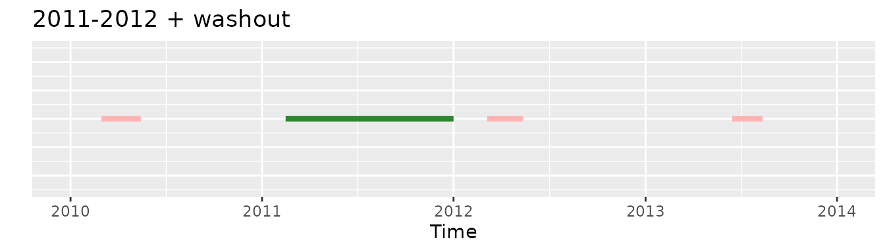
minObs and 2011-2012
Finally requireObservationBeforeDrug and
requireDrugInDateRange will always be commutable operations
so the other of this two will always be the same.
Recommended order
Having all this into account the recommended order to apply criteria would be:
Require a prior drug washout or require first drug entry (particular case).
Require a prior observation before the drug episode.
Require the drugs to be in a certain date range.
Although this is the recommended order, your study design may have a different required specification, for example you may be interested on the first exposure that fulfills some criteria. Thus making applying the require first drug entry at the end.